#2018/08/27 from PCO1.3S04_uniformMRF, keep only the PSF part# reload already processed data.##2018/04/23 from PCO1S10_ionfigured.# Effects of ion beam figuring.# Note that the starting set of data had tag on top of plot and this is kept in analysis
Once deleted, variables cannot be recovered. Proceed (y/[n])? y
Using matplotlib backend: Qt5Agg
Populating the interactive namespace from numpy and matplotlib
ypix=None#0.127901442999 #mm ytox=220./200.zscale=None#0.6328scale=(1000,-1000,0.001)#get data from 4D measurement of PCO1.2S01infolder=outfolder #r'G:\My Drive\Shared by Vincenzo\Metrology logs and data\measure_data\4D_data\Metrology'wf1=os.path.join(infolder,r'180502_RefSub_PCO1.3S04.csv')#r'PCO1.3S04\180502_PCO1.3S04_MRF\180502_RefSub_PCO1.3S04.csv')outfile1=os.path.join(outfolder,os.path.basename(wf1))
#data2D with crop on centerwdata,x,y=points_autoresample(level_points(crop_points(p1,[-35,35],[-35,35])),cut=1) #figuredwdata2,x2,y2=points_autoresample(level_points(crop_points(pd,[-35,35],[-35,35])),cut=1) #original convertedddata,dx,dy=points_autoresample(level_points(crop_points(diff,[-35,35],[-35,35])),cut=1)
WARNING: points number doesn't match regular grid for size determined by points_find_grid
WARNING: points number doesn't match regular grid for size determined by points_find_grid
WARNING: points number doesn't match regular grid for size determined by points_find_grid
WARNING: points number doesn't match regular grid for size determined by points_find_grid
WARNING: points number doesn't match regular grid for size determined by points_find_grid
WARNING: points number doesn't match regular grid for size determined by points_find_grid
WARNING: points number doesn't match regular grid for size determined by points_find_grid
WARNING: points number doesn't match regular grid for size determined by points_find_grid
#plot data after cropplt.figure()maximize()ax1=plt.subplot(131)plot_data(wdata,x,y)plt.xlabel('X (mm)')plt.ylabel('Y (mm)')plt.title('180502 corrected') #plot_points(p1)plt.clim([-0.5,0.5])ax2=plt.subplot(132,sharex=ax1,sharey=ax1)plot_data(wdata2,x2,y2)plt.xlabel('X (mm)')plt.ylabel('Y (mm)')plt.title('170919 initial') #plot_points(pd)plt.clim([-0.5,0.5])ax3=plt.subplot(133,sharex=ax1,sharey=ax1)plot_data(*level_data(ddata,dx,dy))plt.xlabel('X (mm)')plt.ylabel('Y (mm)')plt.title('difference (amount removed)') #plot_points(level_points(diff))plt.clim([-0.5,0.5])#plt.xlim([-57,57])#plt.ylim([-57,57])plt.pause(0.01) #this is needed to give some hope that following processing gets applied (e.g. tight_layout)plt.tight_layout()plt.show()display(plt.gcf())
#same plot using points (not cropped)plt.figure()maximize()ax1=plt.subplot(131)#plot_data(wdata,x,y)plt.xlabel('X (mm)')plt.ylabel('Y (mm)')plt.title('180502') plot_points(p1)plt.clim([-0.5,0.5])ax2=plt.subplot(132,sharex=ax1,sharey=ax1)#plot_data(wdata2,x2,y2)plt.xlabel('X (mm)')plt.ylabel('Y (mm)')plt.title('170919') plot_points(pd)plt.clim([-0.5,0.5])ax3=plt.subplot(133,sharex=ax1,sharey=ax1)#plot_data(*level_data(ddata,dx,dy))plt.xlabel('X (mm)')plt.ylabel('Y (mm)')plt.title('difference') plot_points(level_points(diff))plt.clim([-0.5,0.5])plt.pause(0.01) #this is needed to give some hope that following processing gets applied (e.g. tight_layout)plt.tight_layout()plt.show()display(plt.gcf())
C:\Anaconda2\envs\py36\lib\site-packages\numpy\lib\nanfunctions.py:1434: RuntimeWarning: Degrees of freedom <= 0 for slice.
keepdims=keepdims)
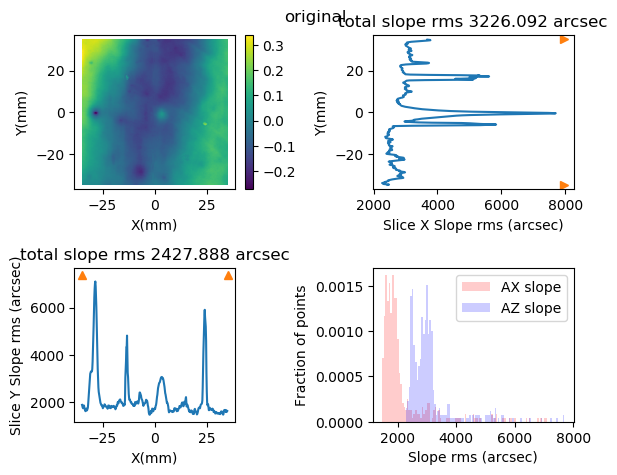
from pySurf.data2D import plot_statsplt.figure('stats')plt.clf()stats = plot_stats ([wdata,wdata2,ddata],labels=['Original','Figured','Difference'])plt.title('Height Distribution') #change title from defaultdisplay(plt.gcf())
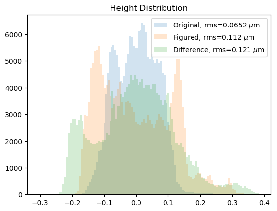
#plots a bunch of profilesfor i inrange(0,400,100): plt.clf() plt.plot(y,wdata[:,i]-line(y,wdata[:,i]),label='corrected') plt.plot(y2,wdata2[:,i]-line(y2,wdata2[:,i]),label='original') plt.legend(loc=0) display(plt.gcf())
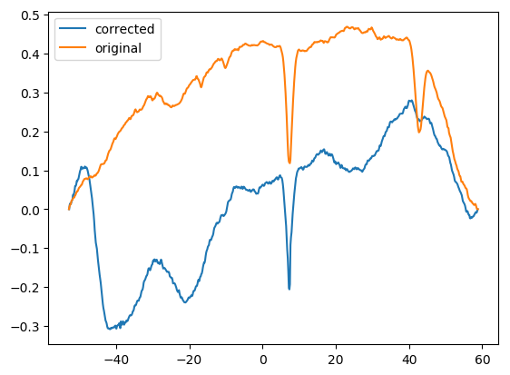
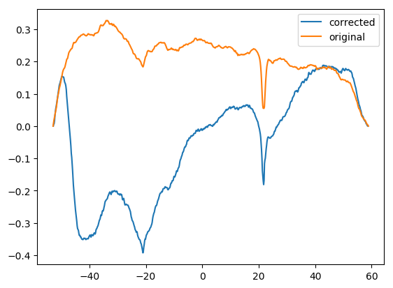
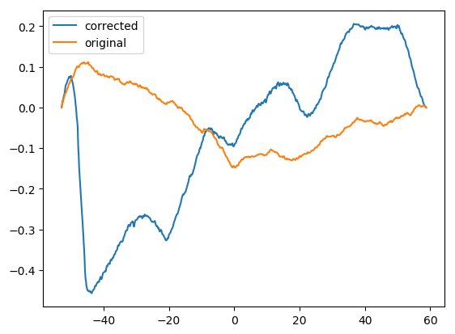
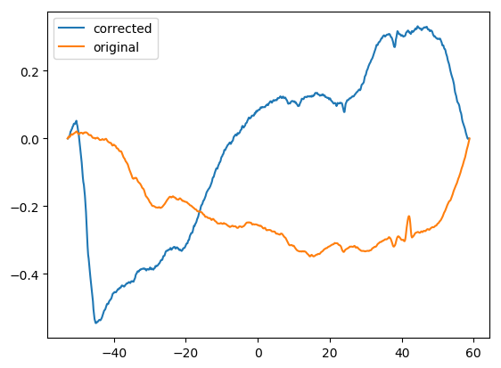
Real TEST
iselx=300xx=yyy=wdata[:,iselx]/1000.xout=np.linspace(-50,50,10000)/206265.plt.figure('Surface Figured')plt.clf()plot_data(wdata,x,y)plt.vlines(x[iselx],*plt.ylim())plt.clim([-0.5,0.5])display(plt.gcf())plt.figure('Profile')plt.clf()plt.title('profile')plt.plot(xx,yy,label='Figured')plt.plot(xx,line(xx,yy))plt.xlabel('Axial Position (mm)')plt.ylabel('Profile height (mm)')display(plt.gcf())
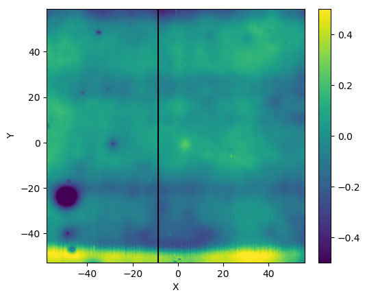
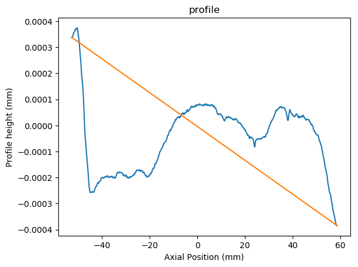
plt.figure('PSF')plt.clf()alpha=89.79plt.title('PSF, alpha=%f6.2'%alpha)xout,yout=PSF_spizzichino(xx,yy,alpha=alpha,xout=xout,level=True)plt.xlabel('angular position around alpha (arcsec)')plt.ylabel('Intensity (a.u.)')plt.plot(xout*206265.,yout,label='Figured')plt.show()display(plt.gcf())
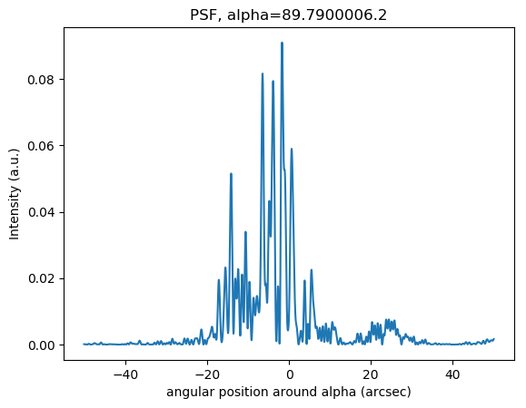
from pyProfile.profile import plot_HEWplt.figure('Int PSF')plt.clf()plot_HEW(xout,yout)plt.title('radial PSF, alpha=%6.2f, hew=%.2g'%(alpha,hew*206265.))display(plt.gcf())
#add original dataiselx=300xx=y2[1:-1]yy=wdata2[1:-1,iselx]/1000.xout=np.linspace(-50,50,10000)/206265."""plt.figure('Surface Original')plt.clf()plot_data(wdata2,x2,y2)plt.vlines(x[iselx],*plt.ylim())plt.clim([-0.5,0.5])display(plt.gcf())"""plt.figure('Profile')plt.plot(xx,yy,label='Original')plt.plot(xx,line(xx,yy))plt.legend(loc=0)display(plt.gcf())
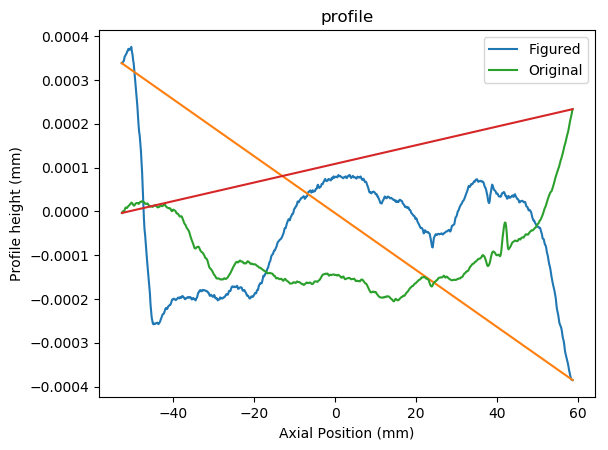
plt.figure('PSF')plt.clf()plt.title('PSF, alpha=%f6.2'%alpha)xout,yout=PSF_spizzichino(xx,yy,alpha=alpha,xout=xout,level=True)plt.xlabel('angular position around alpha (arcsec)')plt.ylabel('Intensity (a.u.)')plt.plot(xout*206265.,yout,label='Original')plt.show()display(plt.gcf())
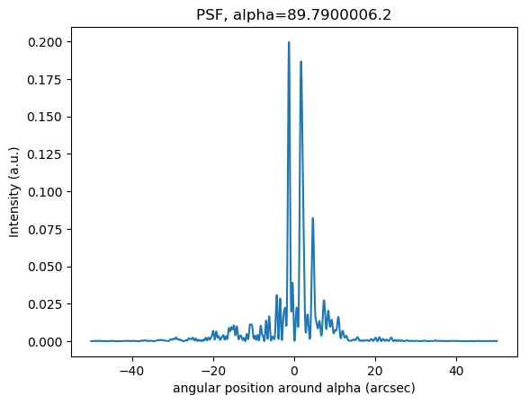
from pyProfile.profile import plot_HEWplt.figure('Int PSF')plt.clf()hewor=plot_HEW(xout,yout)plt.title('radial PSF, alpha=%6.2f, hew=%.2g'%(alpha,hewor*206265.))display(plt.gcf())
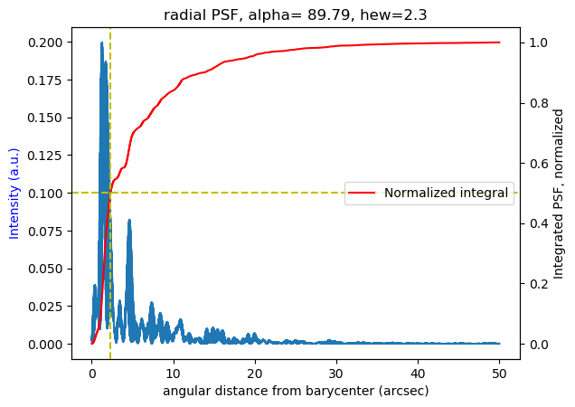
plt.close('all')#try to extend to entire surfacenpoints=10000xout=np.linspace(-50,50,npoints)/206265.#in radians, convert to arcsec at endalpha=89.79def psf2d(y,wdata,xout,nskip=1):"""return a 2d psf for axial profiles on wdata with coordinate y. """ psf2d=[]for col in wdata[:,::nskip].T: yout=PSF_spizzichino(y,col/1000.,alpha=alpha,xout=xout)[1] psf2d.append(yout)return np.array(psf2d).T#return xout*206265.,np.array(yout)
plt.close('all')#try to extend to entire surfacenpoints=10000xout=np.linspace(-50,50,npoints)/206265.#in radians, convert to arcsec at endalpha=89.79def psf2d2(y,wdata,xout=None,nskip=1,alpha=0,energy=1., level=True, HEW=True):"""return a 2d psf for axial profiles on wdata with coordinate y. """ psp =lambda x: PSF_spizzichino(y,x/1000,alpha=alpha,xout=xout, energy=energy,level=level)[1] psf2d=[] res=np.apply_along_axis(psp,0,wdata[:,::nskip])return res#return xout*206265.,np.array(yout)
18.1 s ± 8.01 s per loop (mean ± std. dev. of 7 runs, 1 loop each)
plt.clf()plt.title('PSF, alpha=%f6.2'%alpha)plt.xlabel('angular position around alpha (arcsec)')plt.ylabel('Intensity (a.u.)')#plt.plot(xout*206265,np.nansum(psfor,axis=1),label='original') #convert to arcsecplt.plot(xout*206265,np.nansum(psffig,axis=1),label='figured') #convert to arcsecplt.legend(loc=0)display(plt.gcf())
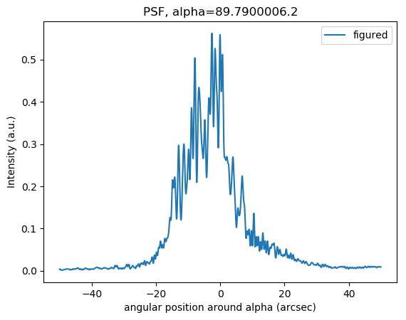
#this is the core of spizzichino calculation function.# try to vectorize for computational efficiency.from dataIO.span import spanimport osimport numpy as npimport matplotlib.pyplot as pltfrom scipy import statsenergy=1.level=True"""Try to use spizzichino theory as in PR notes to calculate Hthe PSF,return a vector of same length as xout.alpha is incidence angle from normal in degrees, alpha= 90 - shell slope for tilt removed profiles. Tilt can be included in the profile, in that case alpha is left to 0 (total slope must be <0 and alpha>0, this means that profile with tilt is expected to be <0).xout can set the output intervals in theta on the focal plane (from specular angle), if not set 512 points are used.Lambda is wavelength in keV."""lambda_mm=12.398425/energy/10**7if xout isNone: lout=1001else: lout=len(xout)L=span(xx,size=True)deltax=L/(len(xx))#calculate and remove slope as alpha. Profile tilt removed is ylif level: slope=line(xx,yy) yl=yy-slope#adjust incidence angle to include the slope removed from profile leveling. # Increasing profile is positive slope angle: alpha=alpha*np.pi/180-np.arctan2(yy[-1]-yy[0],xx[-1]-xx[0])else: yl=yyif alpha<=0: raiseValueErrorthmax= lambda_mm/(2*deltax*(np.pi/2-alpha))#xout is the array of theta for the outputif xout isNone: xout=np.linspace(alpha-thmax,alpha+thmax,lout)else: xout=xout+alphascale=np.sqrt(2.)I=np.array([np.abs( (deltax/L*(np.exp(2*np.pi*1.j/lambda_mm*(xx*(np.sin(alpha)- np.sin(theta))-scale*yl*(np.cos(alpha)+np.cos(theta))))) ).sum())**2for theta in xout])#-----------psffig=psf2d(yt,tdata,xout,nskip=1)plt.subplot(121)plot_data(psffig,xt,xout*206265
plt.clf()plt.title('PSF, alpha=%f6.2'%alpha)xout,yout=PSF_spizzichino(xx,yy,alpha=alpha,xout=xout,level=True)plt.xlabel('angular position around alpha (arcsec)')plt.ylabel('Intensity (a.u.)')plt.plot(xout*206265,np.nansum(psfor,axis=1),label='original') #convert to arcsecplt.plot(xout*206265,np.nansum(psffig,axis=1),label='figured') #convert to arcsecplt.legend(loc=0)display(plt.gcf())
R=220.theta,rad = np.meshgrid((x/R)[::100], xout) #rectangular plot of polar datafig = plt.figure()ax = fig.add_subplot(111,polar=True)ax.pcolor(theta, rad, psf2d) #X,Y & data2D must all be same dimensionsplt.show()
plt.close('all')nskip=10R=220.theta,rad = np.meshgrid((x/R)[::nskip], xout) #rectangular plot of polar datafig = plt.figure()#workaround for colorbarfrom matplotlib import gridspecgs = gridspec.GridSpec(1, 2, width_ratios=[10,1], )ax1 = plt.subplot(gs[0], projection="polar", aspect=1.)ax2 = plt.subplot(gs[1])#ax1 = fig.add_subplot(111,polar=True)im=ax1.pcolormesh(theta, rad, psf2d[:,::nskip]) #X,Y & data2D must all be same dimensions)plt.colorbar(im, cax=ax2)#plt.clim([0,0.10])display(plt.gcf())
plt.close('all')nskip=10R=220.# try to convert points to polar coordinates before plotdef cart2pol(x, y): rho = np.sqrt(x**2+ y**2) phi = np.arctan2(y, x)return(rho, phi)def pol2cart(rho, phi): x = rho * np.cos(phi) y = rho * np.sin(phi)return(x, y)fig = plt.figure()theta,rad = np.meshgrid((x/R)[::nskip], xout) #rectangular plot of polar datatheta[rad<0]=theta[rad<0]+np.pirad=np.abs(rad)#workaround for colorbarfrom matplotlib import gridspecgs = gridspec.GridSpec(1, 2, width_ratios=[10,1], )ax1 = plt.subplot(gs[0], projection="polar", aspect=1.)ax2 = plt.subplot(gs[1])#ax1 = fig.add_subplot(111,polar=True)im=ax1.pcolormesh(theta, rad, psf2d[:,::nskip]) #X,Y & data2D must all be same dimensions)plt.colorbar(im, cax=ax2)#plt.clim([0,0.10])display(plt.gcf())
#plot legendre removed difference(it should be small)plt.figure()leg=legendre2d(ddata,10,10)ddata=ddata-leg[0]plt.xlabel('X (mm)')plt.ylabel('Y (mm)')plt.title('difference Legendre removed') plot_points(level_points(matrix_to_points2(ddata,dx,dy)),vmin=-0.1,vmax=0.1)display(plt.gcf())plt.clf()plt.xlabel('X (mm)')plt.ylabel('Y (mm)')plt.title('difference low order') plot_points(level_points(matrix_to_points2(leg[0],dx,dy)),vmin=-0.1,vmax=0.1)display(plt.gcf())
resampling...
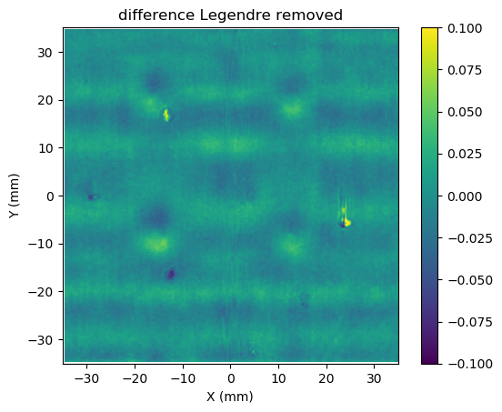
resampling...
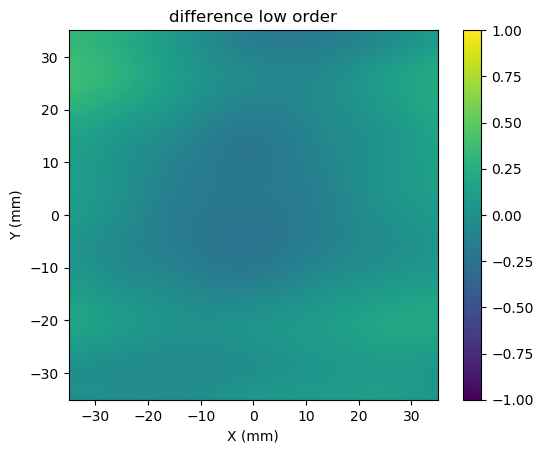
Compare PSDs
from pySurf.psd2d import psd2d_analysis,avgpsd2dfrom pySurf.data2D import levellegendrermsrange=[[None,0.1],[0.1,0.2],[0.2,1],[1,None]] #integration range of frequency for rmsax2f=[0,1,1,0,0] # axis where to plot rms corresponding to intervals in rmsrange: 1 right, 0 leftwfun = np.hanning # type of windows for fourier transformunits = ("mm","mm","$\mu$m") # units of surface data from which PSD is calculatedvrange_surf=([-0.5,0.5]) #color scale of surface mapvrange_leg=([-0.05,0.05]) #color scale of legendre removed mapprange=np.array((1e-8,1.e-1))#np.array((5e-8,1.e-5)) #color scale of 2d psd plot
psd2d_analysis WARNING: `title` replaced `outname` and output figure will be no more generated.OUTNAME will be removed in next version, use title and save the plot after returning from routine.
freq. range [0.014: 0.1]
freq. range [ 0.1: 0.2]
freq. range [ 0.2: 1]
freq. range [ 1: 3.4]
freq. range [ 0: 0.1]
freq. range [ 0.1: 0.2]
freq. range [ 0.2: 1]
freq. range [ 1: 3.4]
freq. range [ 0: 0.1]
freq. range [ 0.1: 0.2]
freq. range [ 0.2: 1]
freq. range [ 1: 3.4]